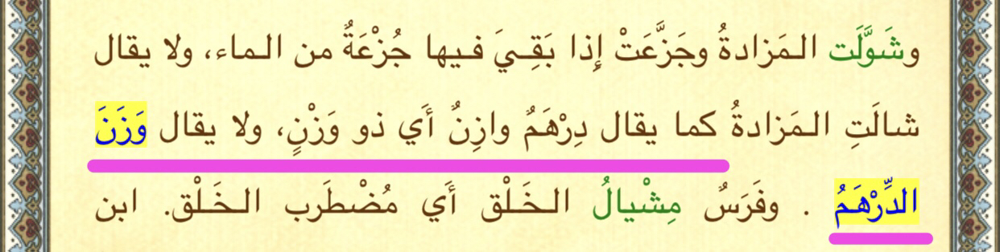
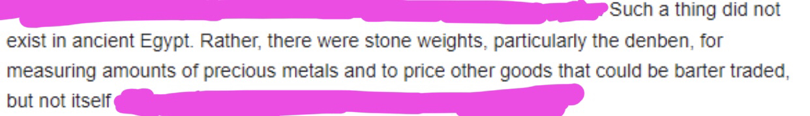
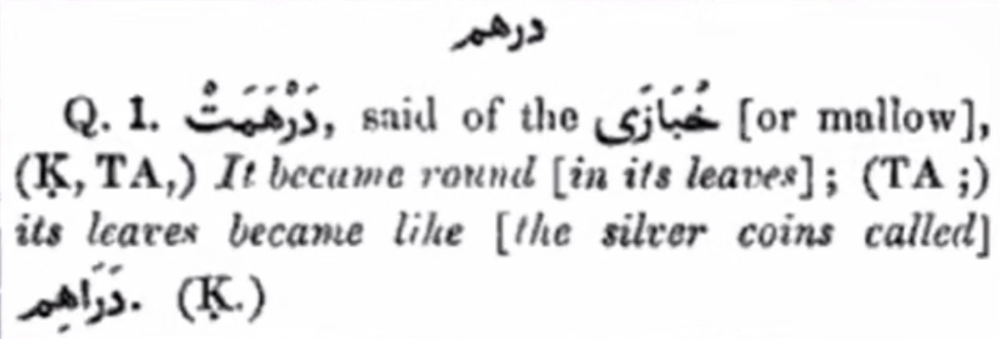

The claim is that in 12:20 the quran makes a historical error. It uses the term “Dirham”
saying that Prophet Yusuf (AS) was purchased with “a countable number of Dirhams” ie
دراهم معدودة
And this supposedly is a substantial lapse in the historical accuracy of the quran. After all, the
“Dirham” currency or even coins for that matter were not utilised in any transactions at the time of
our Prophet Yusuf (AS).
First, let us dissect what the word “Dirham” actually means, as opposed to what it modernically
represents.
The root of the word
د-ر-ه-م
This word linguistically means “weight (of something valuable)”

“That is - we say Dirham of weight, and NOT weight of a Dirham” - Lisaan al Arab
This is indicative of the fact that a Dirham is linguistically a measure of weight,
and not literally a measure of currency
To truly illustrate this notion, let us consider a more relative example
Consider the coin currency of Britain: the Pound
Was the weight named after the currency or was the currency named after the weight?
“Its name derives from the Latin word "poundus" meaning "weight". The £ symbol comes from an ornate
L in Libra. Anglo-Saxon era. The pound was a unit of currency as early as 775AD in Anglo-Saxon England,
equivalent to 1 pound weight of silver. This was a vast fortune in the 8th century.”
https://www.weforum.org/agenda/2016/06/a-short-history-of-the-british-pound/
So we establish that the word “pound” is
NOT exclusively a reference to the currency meaning
NOT the original linguistic meaning which actually comes from “weight”
Pound has BOTH meanings “weight” and “currency”
If I were to say
“The king gave the beggar a few pounds of money”
There is no way to say whether whether the king gave the beggar a few Pounds £ of money or a few Pounds
lbs weight of money
Similarly, when the word Dirham is used, how are we going to say that it DEFINITELY means the currency?
That isn’t even the original meaning of the word. In fact, the currency was NAMED after the original
meaning - that being the weight of something.
“The dirham was a unit of weight used across North Africa, the Middle East, Persia and Ifat;
later known as Adal, with varying values.”
https://en.m.wikipedia.org/wiki/Dirham
And to further demonstrate this, consider the Ayaat in which Allah DOES mention words whose
roots are ‘coin’ or ‘currency’
In 3:75
Allah says
Surah Aal-i-Imraan (The Family of Imraan)
3:75
There are People of the Book who, if you [Prophet] entrust them with a heap of gold,
will return it to you intact, but there are others of them who, if you entrust them with a single dinar,
will not return it to you unless you keep standing over them, because they say, ‘We are under no
obligation towards the gentiles.’ They tell a lie against God and they know it.
Translation: Abdul Haleem | Medinan
Allah mentions the word ‘dinar’ here
“The word "dinar" derives from the Latin "dēnārius," a silver coin of ancient Rome,
which was first minted about c. 211 BCE.”
https://en.m.wikipedia.org/wiki/Dinar
denarius (n.)
ancient Roman silver coin, 1570s, from Latin denarius, noun use of adjective meaning
"containing ten," and short for denarius nummus "the coin containing ten (aces)"
———
Similarly in another verse 18:19
Surah Al-Kahf (The Cave)
18:19
In time We woke them, and they began to question one another. One of them asked,
‘How long have you been here?’ and [some] answered, ‘A day or part of a day,’ but then [others] said,
‘Your Lord knows best how long you have been here. One of you go to the city with your silver coins,
find out where the best food is there, and bring some back. But be careful not to let anyone know
about you:
Translation: Abdul Haleem | Meccan
The term used here is ‘wariq’
This word is derived from “leaf” or “thin metal plate” or “sheet of value”.. and thus it has original
linguistic roots for “coin”.
So why did Allah not use any of these words in 12:20? Why did he choose to use the word Dirham, which
doesn’t originally mean coin or currency, just like the word pound ALSO doesn’t originally mean coin
or currency - but rather originally and linguistically it means “weight”?
It’s almost as if Allah WASN’T making a mistake in the Quran? Who would’ve thought!
———————————
The claimants against Islam continue to attack this verse using the word “معدودة”
These claims are no doubt copium.The term used here is ‘wariq’
This word is derived from “leaf” or “thin metal plate” or “sheet of value”..
and thus it has original linguistic roots for “coin”.
So why did Allah not use any of these words in 12:20? Why did he choose to use the word Dirham,
which doesn’t originally mean coin or currency, just like the word pound ALSO doesn’t originally
mean coin or currency - but rather originally and linguistically it means “weight”?
It’s almost as if Allah WASN’T making a mistake in the Quran? Who would’ve thought!
———————————
The claimants against Islam continue to attack this verse using the word “معدودة”
These claims are no doubt copium.
Since “معدودة” means countable number, apparently this alludes to Dirham being a currency because
it’s supposedly saying you can sum up the amount of money discretely?
This is a fallacious statement. The word Dirham is the weight of something valuable, let’s say,
a weight of a small chunk of gold for example.
Why is it so preposterous that we can have a small countable number of chunks of gold (in our example)
that Yusuf (AS) was purchased with?
The people buying Yusuf (AS) weren’t using entire treasure chests or hoards of money so big that we
can’t even count it in any way to buy him were they? They used a small number of these pieces of this
‘valuable’ weight (Dirhams) and this indicates how little and unvalued Yusuf (AS) was worth to them -
In fact, they purchased him so quickly and informally that they didn’t even bother weighing out
particular / specific amounts of metal.. but rather.. they just handed over a few pieces / arbitrary
weights (literally some Dirhams which means weight) of whatever valuable metal it was and bought him
just like that. THIS is what ‘ma3doodah’ is also indicative of - but Allah juxtaposes this by praising
Yusuf (AS) to a high rank by saying We granted him Hikmah and Ilm.
So this claim that ‘معدودة’ indicates a sum of currency is
Erroneous
Actually is in regards to the small number of the valuable weights they purchased him with, because of
course, these weights were distinct..
—————
So what did people at the time of Yusuf (AS) use for currency? Let’s look to the article attacking this
verse for some.. clues..

Stone weights being used to measure out weights of precious metals, and it’s the weight of metal
that is being used in transactions, and not the stones themselves?? Hmm…
Seems quite authentic to “Dirham” in any objective scenario.
May Allah guide those struck by myopia who mislead people away from Islam with these fallacious arguments.

⬆️ Hans Wehr 4th edition pg23.